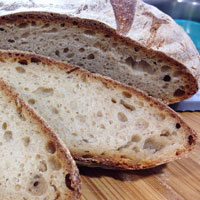

Black Goose Bistro Gallery
Not is our food good, it's also good-looking! Our patrons often stop to admire our fare with a quick Instagram before digging in. We've collected a few of our favorite shots here.
Our Baked Goods

We start our day at the crack of dawn to bake our own muffins, bread, and dinner rolls. Loaves not used that day are donated to the local food shelter.
Our Burgers

People come from all over to enjoy our lovingly made burgers. We grind our own locally-sourced organic beef and turkey so you know it's fresh and free from fillers and other nonsense. Go for one of our creative topping combos or stick with the classics.
Catch of the Day

Our chef works with local fisherman to pick the freshest the sea has to offer for our daily seafood special. Our Roast Cod Caponata with Roasted Potatoes is an old favorite with our regulars.
Fresh from the freezer

While other restuarants value "fresh, never frozen" poultry product, we here at the Black Goose Bistro value honestyy -- and to be honest, our poultry products are fresh and frozen!
Try our ketchup, now with fries!

The perfect side to any burger is some fresh... ketchup. Thats right! When it comes to this famous side, other restuarants have the relationship wrong. The Black Goose Bistro understands that there is no good fries without good ketchup, yet there can be good ketchup without fries. Conspiracy much? I dont know -- regardless, come enjoy our homemade ketchup with fries!
Enjoy our prepackaged Tabouleh

Not everyone knows this, but our tabouleh is just the publix deli tabouleh dumped on a fancy dish for two times the price! Come on in and get the rush of feeling like youve tasted this tabouleh before but cant remember where it was!